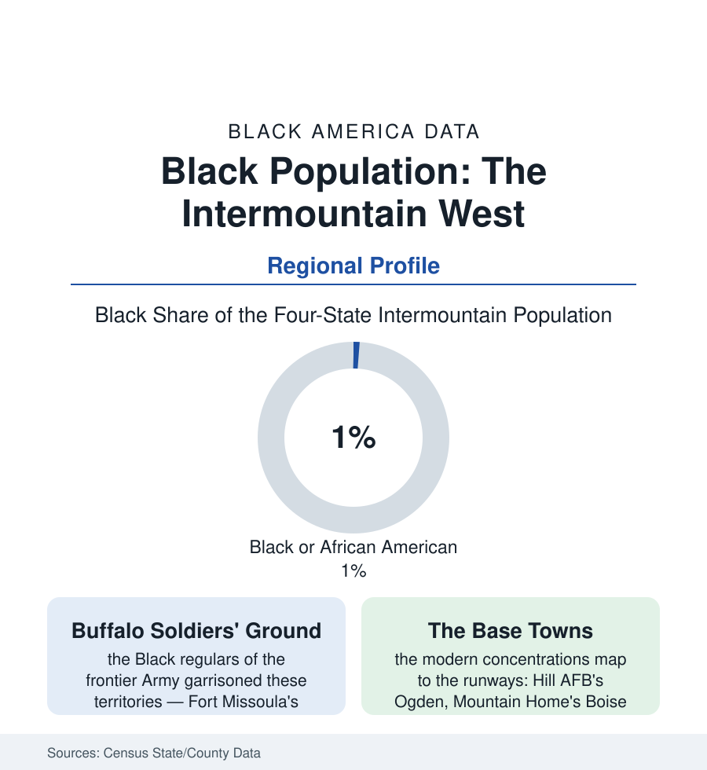

Black Census
The Black Intermountain West: Small Numbers, Fast Growth, Long Roots
Utah, Idaho, Montana, and Wyoming hold some of America's smallest Black populations — and some of its fastest growth rates, on roots older than the states themselves. The regional portrait.

The Intermountain West — Utah, Idaho, Montana, Wyoming — holds the smallest Black population share of any American region, on the order of one percent across four states. It also holds some of the oldest roots in this atlas (Black soldiers, miners, cowboys, and church founders present before statehood) and some of its fastest current growth rates, as the region's booming metros import a national workforce. Small numbers are not the same as no story. This article reads the mountain file.
The Old Roots: Soldiers, Miners, and the Exodusters' Northern Cousins
The nineteenth-century record places Black residents across the territories in the hundreds and low thousands per census — a population of soldiers first: the Black regulars of the 9th and 10th Cavalry and the 24th and 25th Infantry garrisoned the frontier posts (Fort Missoula in Montana, whose 25th Infantry Bicycle Corps rode into legend; Fort Duchesne in Utah; Forts Washakie and Mackenzie in Wyoming), their veterans settling near the flags they served, founding families the county histories still name. Around the garrisons accreted the civilian West of the Black press's record: the miners of the Montana and Idaho camps, the cowboys and ranch hands of Wyoming's cattle country (the historians' estimates putting Black cowboys at a substantial share of the trail-era workforce — the mountain states' portion visible in the ranch records), the railroad porters and hotel men of the division towns, the Exoduster-era farm colonies' northern echoes, and the church plants (Salt Lake City's Black congregations date to the pioneer era's immediate aftermath; Boise's and Great Falls' and Cheyenne's Black churches anchor communities the census counted in the hundreds through the whole twentieth century). The numbers stayed small by the region's design as much as its distance: the sundown practices of the mountain towns in the historical record, the restrictive covenants of the postwar subdivisions in the housing data, and the sheer thinness of the industrial employment that drew Black workers elsewhere — the region offering no Chicago, no shipyard, no federal city — kept the census rows low even as the community institutions, per capita, ran as complete as anywhere in this atlas: the church, the lodge, the NAACP chapter (Salt Lake's among the West's oldest), the Black newspaper's intermittent brave runs.
The Modern Growth: Bases, Booms, and the New Arrivals
The twenty-first-century data turn the file: the region's metros — Boise among America's fastest-growing for a decade, Salt Lake's Wasatch Front, the Utah County tech corridor — import a workforce the census diversification rows now record (Idaho's and Utah's Black populations growing at multiples of their states' (already rapid) overall rates in the intercensal comparisons — small bases, steep percentages, real neighborhoods forming in Nampa, Meridian, West Valley, Ogden), the military map persisting underneath (Hill Air Force Base's Ogden the region's most established Black community — the defense workforce's generations; Malmstrom's Great Falls and Mountain Home's Boise orbit the same pattern; the federal file's geography indifferent to the region's demographics). The refugee and immigrant layer adds the newest stratum in the resettlement data: Boise and Salt Lake City both designated resettlement hubs, their Congolese, Sudanese, and Somali communities (the foreign-born file's mountain chapter) building the mosques, markets, and churches of the region's most visible new Black presence — a second founding, by airlift, alongside the first's descendants. The strains in the data are the small-minority file's own: the only-one-in-the-room schooling the education surveys record, the hair-and-grocery deserts of the retail rows, the hate-incident statistics' low counts and long shadows, and the political representation rows at their thinnest in the nation — against which the community's own accounting notes the counterweights: the cost-of-living and safety rankings that drew the movers, the outdoors the region sells, and the particular solidarity of a community small enough, in the local record's phrase, for everyone to actually know everyone.
Reading the Mountain Numbers
One percent is a rounding error with a history: soldiers before statehood, churches before statehood's grandchildren, and a growth curve now bending like the rest of the New West's. The Intermountain file is this section's reminder that the Black presence in America is not a regional story with exceptions — it is a national one, at every density, and the thinnest rows of the census were written by people who built the whole institutional shelf anyway, at altitude.
More in Black Census
The Black Population of the United States: Size, Definitions, and Distribution
The Black population of the United States totals 52.8 million — 15.4 percent of the nation. How the Census Bureau defines and counts the population, and where it lives.
Black Median Household Income in the United States
Black median household income stands at $56,490 in the Census Bureau's annual income report — how the figure is measured, how it compares, and what drives it.
The Black Poverty Rate: Levels, Children, and the Long Trend
The official Black poverty rate is 17.1 percent — against 11.1 percent nationally and 7.7 percent for non-Hispanic White Americans. How poverty is measured and what the data show.
Source: U.S. Census Bureau, 2020 Census and American Community Survey state and county data; state historical society records; Hill Air Force Base and Mountain Home AFB community data.